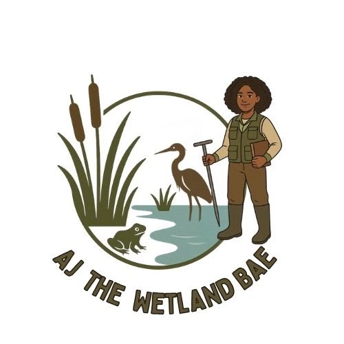
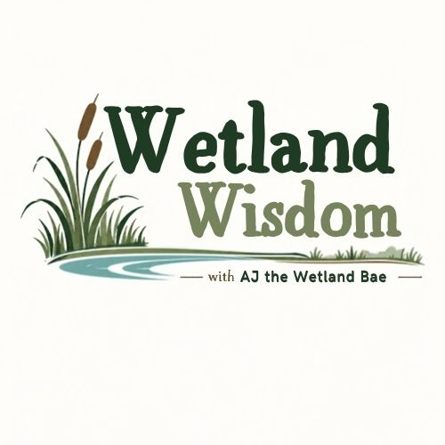

Education
University of Florida
Ph.D., Environmental Engineering Sciences
Degree conferral expected December 2026
Virginia Tech
B.S., Biological Sciences · 2020
WELCOME TO MY CORNER OF WETLAND SCIENCE
I'm a wetland scientist passionate about understanding how wetlands function and making environmental science more accessible.
Through research, education, and outreach, I connect people with wetland science.

SCIENCE · RESEARCH · EDUCATION · CONNECTION01 / ABOUT AJ
I'm AJ, a wetland scientist with a background in biological sciences and environmental engineering sciences.
My research explores the relationships between wetland hydrology, vegetation, and soil organic carbon, from wetlands across the United States to individual wetland ecosystems in Virginia, North Carolina, and North Florida.
Outside of research, I'm passionate about science communication, education, and creating opportunities for others to engage with environmental science. Whether I'm collecting soil samples in the field, presenting research at a conference, or talking with the public about wetlands, I enjoy finding ways to connect people with science.
Education & experience ↓A downloadable public CV can be added later.A LITTLE MORE ABOUT MY BACKGROUND
University of Florida
Ph.D., Environmental Engineering Sciences
Degree conferral expected December 2026
Virginia Tech
B.S., Biological Sciences · 2020
NSF Graduate Research Fellowship
UF Water Institute Research Award
Sally & William Glick Graduate Research Endowment
National Wetland Condition Assessment — soil organic carbon research
Field-based wetland hydrology and soil carbon investigations
Society of Wetland Scientists — Student Section leadership
University of Florida Water Institute Ambassador
02 / RESEARCH & PROJECTS
My research focuses on how environmental conditions influence wetland soil carbon storage, particularly the role of hydrology across spatial scales. Explore my research outputs and datasets below.
Research examining spatial patterns and environmental drivers of soil organic carbon across U.S. wetlands using National Wetland Condition Assessment data.
Ecological Indicators preprint ↗Field and hydrologic data collected from freshwater wetlands in North Florida to investigate relationships among hydroperiod, landscape position, and soil carbon.
View dataset on HydroShare ↗03 / BEYOND THE DESK
From wetland fieldwork to conferences, classrooms, and community events, science has taken me to some incredible places. Here's a look at the experiences, people, and moments that have shaped my journey.
04 / SCIENCE EDUCATION
Welcome to Wetland Wisdom, where we explore the science behind wetland ecosystems.
Through lectures, field videos, and other educational resources, we'll explore how wetlands function, why they matter, and the processes that make these ecosystems unique.
Whether you're a student, educator, or simply curious about wetlands, there's something here for you.

THE LEARNING LIBRARY
05 / ARTICLES, FEATURES & TALKS
A collection of articles, interviews, presentations, and other opportunities to share my research and experiences in science.
06 / CONTACT
Interested in my research, science education, or potential collaborations? I'd love to connect.
You can find me on LinkedIn, explore my work on GitHub, or reach out about research, outreach, and speaking opportunities.